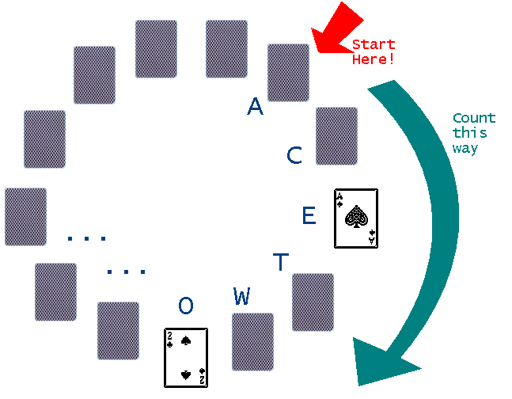

|
Problem C: Let's Play Magic! |
|
Time limit: 1 second |
You have seen a card magic trick named "Spelling Bee". The process goes as follows:

Now, how does the magician arrange the cards?
Input consists of several test cases. Each case begins with an integer N (1 ≤ N ≤ 52), the number of cards to be used in the magic trick. The following N lines show the order of the turning-over of the cards and the words to be spelt. None of the words will have more than 20 characters. The format for each card is a string with two characters: first the value, and second the suit.
Input ends with a test case where N=0. This test case should not be processed.
For each case, your program should output the initial arrangement of the cards.
13 AS ACE 2S TWO 3S THREE 4C FOUR 5C FIVE 6C SIX 7D SEVEN 8D EIGHT 9D NINE TH TEN JH JACK QH QUEEN KH KING 0
QH 4C AS 8D KH 2S 7D 5C TH JH 3S 6C 9D